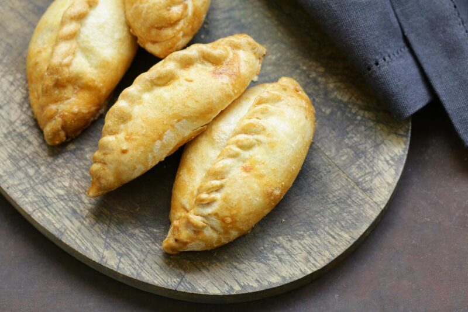

Empanadas de Queso y Cebolla

Ingredientes para media docena:
- 6 tapas de empanadas (caseras o compradas).
- 3 cebollas grandes cortada en juliana (tiritas).
- 150g. de queso cremoso u otro queso que se derrita.
- 100 gr de queso rallado.
- 1 cucharada panzona de queso de untar (tipo Philadelphia o aledaños).
- 1 huevo.
- Sal y pimienta.
Para hacer la masa casera:
- 500 gr de harina de trigo
- 1/2 taza de agua
- 1/2 cucharada de sal
Masa casera paso a paso:
- Agregar la harina al agua hasta formar una masa. Colocar en la mesada y amasar hasta lograr una masa lisa. En el caso de ser necesario se le puede ir agregando harina.
- Dejar reposar la masa cubriéndola con film (o una bolsa de nylon) por media hora.
- Luego que pase el tiempo, formar bolitas del tamaño de una pelotita de ping pong. Pasarlas por harina y aplastarlas manteniendo la forma redonda.
- Estirar con un palo de amasar de la siguiente manera: estirar, girar un cuarto la masa, volver a estirar, siempre de a cuartos y para el mismo lado para que mantenga la forma circular. Tienen que quedar de un espesor de 1 mm.
- Rellenar con su relleno preferido y al horno!
Preparar el relleno y listo!
- 1. Cortar la cebolla en tiras finas. Disponer un toque de oliva en la sartén y sofreir hasta que esté transparente. Agregar un toque de sal y pimienta. Reservar
- Luego cortar el queso en taquitos más o menos pequeños.
- Mezclar bien todo en un bol. Truquito: Agregar a esta mezcla una cucharada de queso untable, el queso rallado, el huevo y mezclar bien. No debe quedar una pasta, simplemente un poco pegajoseada la cosa.
- Colocar cada tapa de empanada sobre la mesada con 1 cucharada de relleno de queso y cebolla en el centro.
- Mojar con agua los bordes de la mitad de la tapa para empanada y cerrar apretando con fuerza los bordes.
- Hacer el repulgue que sepas. En estas empanadas es importante el repulgue ya que el queso suele tener claustrofobia. Si no sabés ningún repulgue podés cerrarlas con un tenedor, presionando levemente pero me gustaría que asumas públicamente que sos un trucho.
- Pincelar la fuente para horno con un toque de aceite.
- Hornear las empanadas en horno medio-alto hasta que se vean doradas por fuera ¡Cuidado que no se les quemen por debajo!